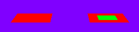
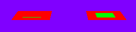
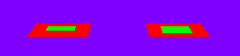

PolygonOffset.h
This is a simple demonstration. Four squares are displayed, two on the left and two on the right. The red squares and green squares are coplanar. The right pair of squares has a polygon offset render state attached. When you move the camera forward/backward with the up/down arrow keys, the squares on the left show z-buffer fighting. The squares on the right do not because the polygon offset biases the z-values so the two squares are just slightly not coplanar.
|  |
|  |
|  |